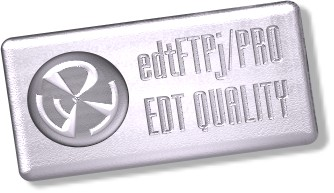

|  |
edtFTPj/PRO (formerly edtFTPj/SSL) is a Java library which allows developers to add secure file transfer capabilities to their applications with minimal effort. edtFTPj/PRO implements both FTPS (implicit and explicit modes), and SFTP (FTP via SSH).
Built on the solid foundation of the stable and mature edtFTPj code-base, edtFTPj/PRO benefits from the robustness that years of open-source development and thousands of installations brings.
This document provides an overview of the package and links to details documentation and examples.
A list of features may be found here.
An extensive set of examples are provided to help developers get started.
Please visit the edtFTPj/PRO purchasing page for information on prices and purchasing.
For rapid support of edtFTPj/PRO (both customers and evaluators), please see Getting Help.
The trial version of edtFTPj/PRO can be downloaded and used for 30 days. If you are intending to purchase the product, please use the trial to ensure compatibility with your servers. A trial license, license.jar, is provided via a download link after registering for the trial, and is also emailed to the registered email address. It should be placed in the lib directory for the examples to run. Contact us if you need to extend the trial period.
Enterprise Distributed Technologies is based in Brisbane, Australia.
In the first instance, please e-mail info@enterprisedt.com for details of our services.
Our address in Australia is:
Enterprise Distributed Technologies Pty Ltd
138 Mountain Street
Mt Gravatt
Queensland
4122
Australia
You can call EDT during working hours (8 am - 8 pm GMT+10) on:
+61 7 3411 4010